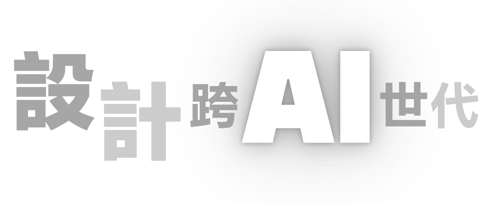
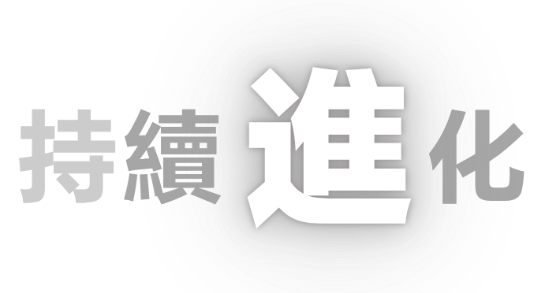
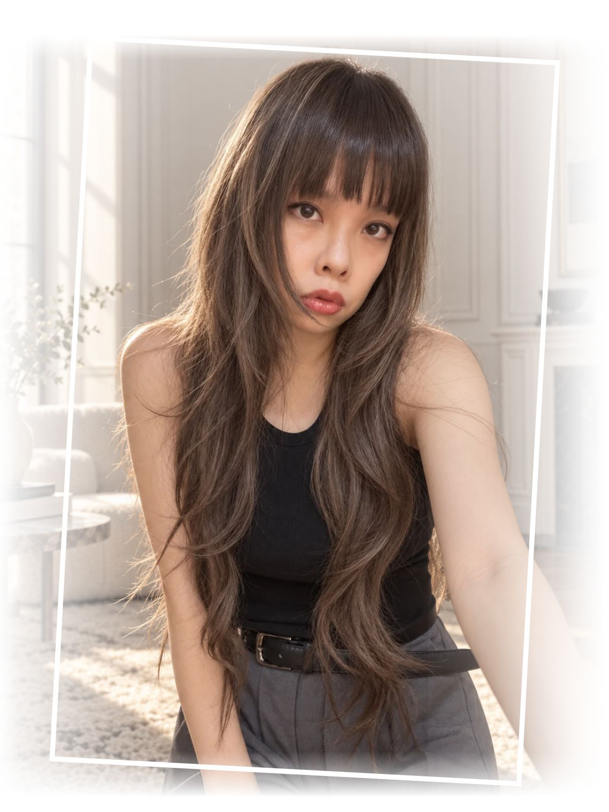

商品內容企劃美編
- 商品詳情敘述撰寫
- 商品詳情圖排版
- 商品圖拍攝、修圖
- 商品開箱影片拍攝、後製
- 商品使用教學


我從沒有AI時代的手繪插畫、平面設計，到至今有AI協助的電商美編設計、商品上架，甚至可以架一個形象網站。已有二十多年相關設計經驗。
多元風格曾跨越不少產品，基本上只要公司要求我都會配合改變調整風格。
這個網頁裡面作品大部分都是之前公司或接案，都是一層一層圖層去設計，也有近期依公司要求快速用AI生成的平面設計和AI短影音。

在英國殖民地時期香港出生受教育，後來依親來台灣在台北從事設計相關工作近二十年，近期與家人在台中北屯購屋定居。
早期是做動畫和遊戲美術，主要是手繪設計為主。後期漸漸轉變領域至偏向商業設計領域，主要是網頁素材、網頁前端設計方面，在還沒有AI出現的時代是一串一串html及css語法切版、建構出來的。
後來因市場所需，轉職電商美編，從企劃、商品詳情頁、商品影片及AI短影音，再加上AI協助能快速批次整理商品上架資訊，全程幾乎是只有我一個人部門獨自完成。
我希望用過往累積的實務經驗與不斷學習新工具的應用，協助團隊共同互相激發創意、穩定在指定時程內完成各項的專案任務，將成就變成每個工作生活中的樂趣。
品牌、網站、視覺與影音設計，
依專案目標規劃內容，
提供清楚一致的製作方式。